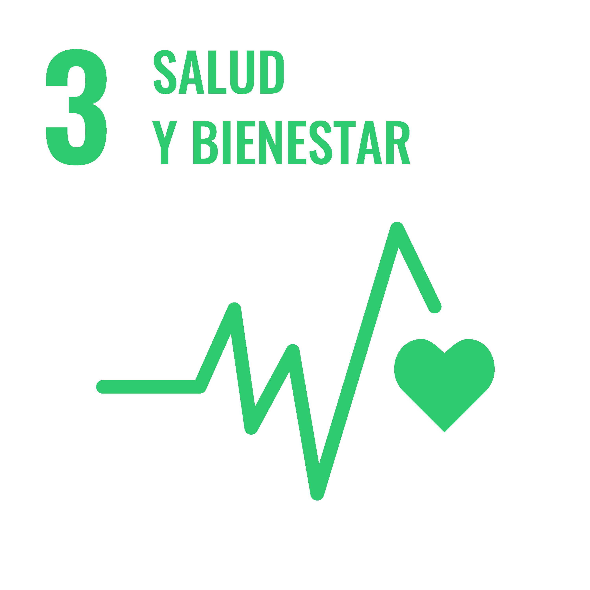

Salud y Bienestar (ODS 3)
Promovemos una vida sana y el acceso a información médica preventiva para todas las edades.
Tu plataforma digital de confianza para consultar material especializado en Salud Integral y Educación Continua (ODS 3 y 4).
Explorar Catálogo
Promovemos una vida sana y el acceso a información médica preventiva para todas las edades.
Facilitamos recursos educativos gratuitos para fortalecer el aprendizaje técnico y profesional.